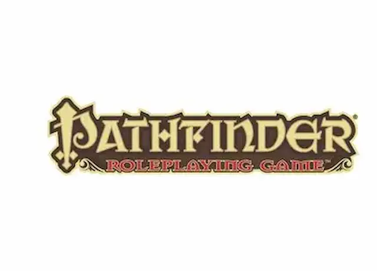

Dungeons & Dragons (D&D)
Dungeons and Dragons is the most iconic fantasy tabletop RPG, first published in 1974. Players create characters like wizards, rouges, or fighters and embark on adventures led by a Dungeon Master(DM). Gameplay involves storytelling, dice rolls, and character progression through experience points. The current edition (5e) emphasizes streamlined rules and collaborative storytelling.
Pathfinder
Pathfinder was created by Paizo Publishing in 2009 as a spin_off of D&D 3.5e. It offers deep character custimization, tactical combat, and a rich fantasy setting called Golarian. Pathfinder Second Edition (2019) introduced streamlined mechanics while retaining complexity for experienced players. It's ideal for those who enjoy detailed rules and strategic gameplay.
Savage World

Savage Worlds is a fast-paced, flexible RPG system published by Pinnacle Entertainment. It supports any genre—from fantasy to sci-fi—and emphasizes quick resolution and cinematic action. The current edition, SWADE (Savage Worlds Adventure Edition), uses streamlined mechanics like “Edges” and “Hindrances” to define characters. It’s great for pulpy, action-driven campaigns with minimal prep.